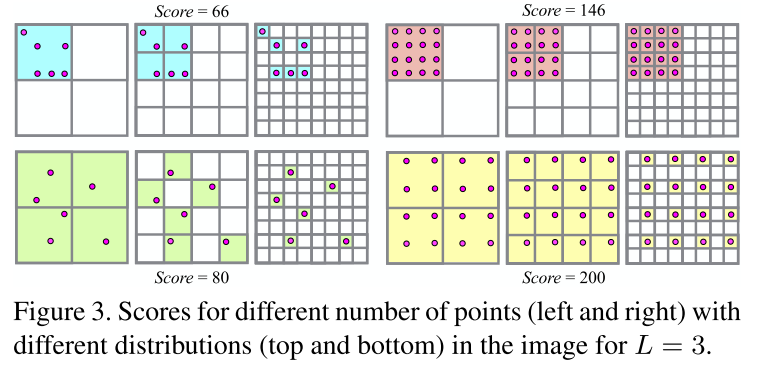

VisibilityPyramid¶
VisibilityPyramid是捕获2D网格中点分布的类。 例如，捕获图像中可见3D点的分布。
该类通过得分来记录点的分布。 分数越高，网格中点的分布越均匀。
得分是通过多分辨率金字塔中填充单元的数量来计算的。 如果填充的单元格至少填充一个点，并且根据其在金字塔中的分辨率对总得分有不同贡献， 分辨率级别较高的单元对整体得分的贡献更高。

成员变量¶
输入点的范围
-
size_t
width¶
-
size_t
height_¶
整体可见度得分
-
size_t
score_¶
填充所有单元格时的最大分数
-
size_t
max_score_¶
具有多个级别的可见性金字塔
-
std::vector<Eigen::MatrixXi>
pyramid_¶
成员函数¶
构造函数
构造函数有两种，第一种是默认构造函数，默认num_levels，width，size_t 为 (0，0，0)
第二种是带三个参数的构造函数
-
VisibilityPyramid::VisibilityPyramid()¶
-
VisibilityPyramid::VisibilityPyramid(const size_t num_levels, const size_t width, const size_t height)¶
pyramid_.resize(num_levels);
for(size_t level = 0; level < num_levels; ++level) {
const size_t level_plus_one = level + 1;
// dim = level_plus_one * 2
const int dim = 1 << level_plus_one;
// 构造dim行dim列的矩阵
pyramid_[level].setZero(dim, dim);
// 总得分加上 dim ^ 4
// 每个格子的得分是 dim * dim, 所以该层的最多得分是 dim ^ 4
max_score_ += dim * dim * dim * dim;
}
}
得分
-
void
VisibilityPyramid::SetPoint(const double x, const doubley)¶
CHECK_GT(pyramid_.size(), 0);
size_t cx = 0;
size_t cy = 0;
CellForPoint(x, y, &cx, &cy);
// 从金字塔最上层开始，计算得分
for (int i = static_cast<int>(pyramid_.size() - 1); i >= 0; --i) {
auto& level = pyramid_[i];
level(cy, cx) += 1;
if (level(cy, cx) == 1) {
score_ += level.size();
}
cx = cx >> 1;
cy = cy >> 1;
}
CHECK_LE(score_, max_score_);

注意看箭头指向的点，在不同的分辨率下占据着不同的格子坐标。(从0开始)
层数 = 3 => x = 5, y = 0
层数 = 2 => x = 2, y = 0
层数 = 1 => x = 1, y = 0
所以每次循环会有 cx = cx >> 1; cy = cy >> 1;
每一层金字塔 pyramid_[i] 用 level表示 ，level(cy, cx)表示该层的(cx, cy)格子有无点。
如果在该层，该点是第一次添加， 则得分加上该层元素的个数(dim * dim)。
重置得分
-
void
VisibilityPyramid::ResetPoint(const double x, const double y)¶
CHECK_GT(pyramid_.size(), 0);
size_t cx = 0;
size_t cy = 0;
CellForPoint(x, y, &cx, &cy);
for (int i = static_cast<int>(pyramid_.size() - 1); i >= 0; --i) {
auto& level = pyramid_[i];
level(cy, cx) -= 1;
if (level(cy, cx) == 0) {
score_ -= level.size();
}
cx = cx >> 1;
cy = cy >> 1;
}
CHECK_LE(score_, max_score_);
将图像坐标转换到格子中的点的位置
-
void
VisibilityPyramid::CellForPoint(const double x, const double y, size_t *cx, size_t *cy) const¶
CHECK_GT(width_, 0);
CHECK_GT(height_, 0); const int max_dim = 1 << pyramid_.size();
*cx= Clip(static_cast(max_dim * x / width_), 0, static_cast(max_dim -1));
*cy = Clip(static_cast(max_dim * y / height_), 0,static_cast(max_dim - 1));
template <typename T>
template T Clip(const T& value, const T& low, const T& high){
return std::max(low, std::min(value, high));}